인터넷정보관리사-2급 (2017-06-10 기출문제)
1과목: 인터넷의 이해
1. 다음 중 우리나라 국가 5대 기간전산망에 해당하지 않는 것은?
- 국방전산망(DNIS)
- 행정전산망(NATIS)
- 주식전산망(SNIS)
- 교육전산망(KREN)
(정답률: 91%)

2. 다음 중 국내 도메인 주소체계에 대한 설명으로 옳지 않은 것은?
- 1단계는 TLD라하며 .kr 등을 할당한다.
- 2단계는 SLD라하며 .ac .co .go 등을 할당한다.
- 3단계는 도메인 이름으로 지역도메인을 할당한다.
- 4단계는 호스트 이름으로 www, ftp 등을 할당한다.
(정답률: 60%)
3. 다음 중 IPv4 클래스에 대한 설명으로 옳지 않은 것은?
- A클래스의 용도는 국가나 대형 통신망에 할당한다.
- B클래스의 용도는 소규모회사나 ISP업체에 할당한다.
- D클래스의 용도는 멀티캐스트용 IP주소이다.
- E클래스의 용도는 실험용도로 예약되었다.
(정답률: 67%)
4. 다음 중 국제인터넷 기구인 ICANN의 산하기구와 담당업무가 잘못 연결된 것은?
- GNSO – 일반 최상위 도메인의 신규 생성
- ASO – IP 주소 지원 기구
- ccNSO – 국가 최상위 도메인 관련 정책 개발
- GAC – 국가 IP 주소 관련 지원 및 정책 개발
(정답률: 49%)
5. 다음 중 도메인 네임 선정 원칙에 대한 설명으로 옳지 않은 것은?
- 영문자는 대소문자 구별이 없다.
- 반드시 영어로 시작해야 한다.
- 하이픈(-)으로 시작하거나 끝날 수 없다.
- 도메인 네임의 길이는 최대 63자까지 가능하다.
(정답률: 71%)
6. 다음 중 IP주소에 대한 설명으로 옳지 않은 것은?
- IPv4는 64비트 체계이며, 10진수숫자로표기된다.
- IPv4는 5개의 클래스로 나누어져 있다.
- IPv6 주소로 할당되는 유형은 유니캐스트, 애니캐스트, 멀티캐스트 주소이다.
- IPv6는 128비트 체계이며, QoS를 제공한다.
(정답률: 69%)
7. 다음에서 설명하는 인터넷 프로토콜은?
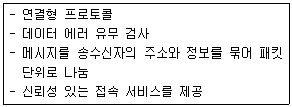
- TCP
- IP
- HTTP
- UDP
(정답률: 61%)
8. 다음 중 프로토콜과 그에 대한 설명이 잘못 짝지어진 것은?
- HTTP–하이퍼텍스트 문서를 교환하기 위한 프로토콜
- POP–전자우편 송·수신을 위한 프로토콜
- FTP–파일 전송을 위한 프로토콜
- DHCP–동적 호스트 설정을 위한 프로토콜
(정답률: 68%)
9. 다음 중 전자우편에 관련된 프로토콜이 아닌 것은?
- ARP
- POP3
- IMAP
- SMTP
(정답률: 72%)
10. 다음 중 소셜미디어 형태와 그에 대한 설명으로 옳지 않은 것은?
- 블로그–글자 수에 제한을 받지 않으며, 검색을 통한 강한 전파력을 가진다.
- SNS–단문을 주고받는 서비스이고 실시간 빠른 확산을 한다.
- 위키피디아–개방성, 목적성과 현재성의 특징을 갖는다.
- UCC–전문가가 정보를 생산하며 정보전달에 큰 효과가 있다.
(정답률: 72%)
11. 다음 중 소셜미디어의 특징으로 옳지 않은 것은?
- 기관의 대표성을 지닌 공지 성격의 정보를 전파할 수 있다.
- 소셜미디어의 활용을 통한 광고비의 절감 효과를 가져 올 수 있다.
- 음란물 여과가 쉽지 않다.
- 중독 가능성이 낮으며 제도적 통제수단이 많다.
(정답률: 75%)
12. 다음에서 설명하는 소셜미디어는?
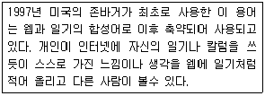
- 블로그
- UCC
- 트위터
- 소셜 커머스
(정답률: 74%)
13. OSI 7계층 중, 다음에서 설명하는 것은?
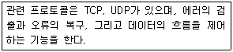
- 응용계층
- 전송계층
- 네트워크계층
- 링크계층
(정답률: 57%)
14. 다음 중 소셜미디어의 짝이 잘못 이루어진 것은?
- 블로그–티스토리, 이글루스
- 메신저–카카오톡, 위챗
- UCC–마이피플, 라인
- 소셜커머스–쿠팡, 티켓몬스터
(정답률: 77%)
15. 다음 중 전자상거래 관련 용어에 대한 설명으로 옳지 않은 것은?
- CRM은 고객관계관리라고 하며, 기업이 고객과 관련된 내·외부 자료를 분석·통합하여 마케팅 활동에 활용하는 것을 말한다.
- CALS는 국제적으로 표준화된 정보와 데이터들을 인터넷을 통해 교환함으로써 전자상거래를 더욱 빠르고 편리하게 구현됨을 가리키는 말이다.
- GtoB는 정부와 기업 간 거래로 주로 정부 조달 EDI등을 말한다.
- IDC는 가정이나 소규모 사무실에서 인터넷과 같은 통신 네트워크를 통해 최소인력과 비용으로 소득을 올리는 사업형태를 말한다.
(정답률: 55%)
16. 다음 중 전자우편 메시지의 헤더 구성요소에 대한 설명으로 잘못된 것은?
- Message-ID–편지에 지정된 식별 번호로 각 메시지를 구별하여 배달
- Reply-To–답장을 받을 주소를 표시
- Subject–메시지의 제목이 표시되며, 제목 없이 메시지를 보내기도 가능
- Cc–숨은 참조인의 전자우편 주소
(정답률: 53%)
17. 다음 중 APT 공격 과정에 대하여 순서대로 나열한 것은?
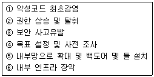
- ④-①-⑤-②-③-⑥
- ④-①-⑤-②-⑥-③
- ④-②-①-⑥-⑤-③
- ④-②-①-③-⑤-⑥
(정답률: 60%)
18. 다음 중 개인정보의 유형이 잘못 짝지어진 것은?
- 가족정보–출생지, 직업, 전화번호
- 병역정보–군번, 제대유형, 주특기
- 고용정보–노조 가입, 정당 가입, 종교단체 가입
- 의료정보–가족병력기록, 정신질환 기록, IQ
(정답률: 71%)
19. 다음 중 저작권법에서 사용하는 용어에 대한 설명으로 옳지 않은 것은?
- 저작물은 인간의 사상 또는 감정을 표현한 창작물을 말한다.
- 음반은 음이 유형물에 고정된 것을 말한다.
- 발행은 저작물을 공연, 공중송신 또는 전시 방법으로 공중에게 공개하는 경우를 말한다.
- 공중은 불특정 다수인을 말한다.
(정답률: 62%)
20. 다음 설명은 전자서명법의 용어 중 어떠한 것에 해당하는가?
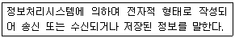
- 전자서명
- 전자문서
- 공인인증서
- 공인전자서명
(정답률: 80%)
21. 전자서명인증관리센터의 주요업무가 아닌 것은?
- 공인인증기관 제도 연구 및 국제협력 지원
- 전자서명 이용활성화 추진
- 전자서명인증에 관련 기술개발 및 보급
- 공인인증기관 실질 심사 및 정기 점검
(정답률: 47%)
22. 다음 괄호에 들어갈 말이 올바르게 짝지어진 것은?
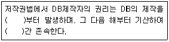
- 완료한 시점, 5년
- 시작한 시점, 5년
- 완료한 시점, 7년
- 시작한 시점, 7년
(정답률: 81%)
23. 개인정보보호법에서 업무를 목적으로 개인정보 파일을 운용하기 위하여 스스로 또는 다른 사람을 통하여 개인정보를 처리하는 공공기관, 법인, 단체 및 개인을 무엇이라 하는가?
- 개인정보처리자
- 개인정보파일
- 공공기관
- 정보주체
(정답률: 67%)
24. 다음 중 자외선을 이용하여 저장된 정보를 지운 후 새로운 정보를 기록할 수 있는 기억장치는?
- RAM
- PROM
- EPROM
- EEPROM
(정답률: 59%)
25. 다음 중 소프트웨어 관련 용어에 대한 설명으로 옳지 않은 것은?
- 셰어웨어–일정 기간 동안 무료로 사용해본 후 사용자가 계속 사용할 의향이 있으면 비용을 지불하는 소프트웨어
- 베타버전–미처 발견하지 못한 오류를 찾아내기 위해 개발자들이 자체적으로 내부에서 테스트하는 소프트웨어
- 번들–하드웨어 또는 소프트웨어를 구입할 때 무료로 제공하는 소프트웨어
- 펌웨어–일반적으로 롬에 저장된 하드웨어를 제어하는 마이크로 프로그램을 의미
(정답률: 49%)
26. 다음 중 컴퓨터 바이러스의 구분에 해당하지 않는 것은?
- 트로이 목마
- 스파이웨어
- 멀웨어
- 패치
(정답률: 82%)
27. 다음 중 대역폭에 대한 설명으로 옳지 않은 것은?
- 네트워크상에서 정보통신용 신호의 최고 주파수를 의미한다.
- 정보를 전송할 수 있는 능력을 말한다.
- 대역폭이 높으면 더 많은 사용자를 수용할 수 있다.
- 대역폭이 높으면 더 많은 데이터를 송수신 할 수 있다.
(정답률: 50%)
28. 다음 중 전용회선의 속도가 빠른 순서대로 나열된 것은?
- T3–T2–E1-T1
- T3–T2–T1-E1
- E1–T3–T2-T1
- E1–T1–T2–T3
(정답률: 70%)
29. 다음 중 웹상에서 HTTP, FTP 등을 제공하는 각 서버들에 저장되어 있는 파일들의 위치를 명시해 주는 유일한 주소를 무엇이라 하는가?
- URL
- HTTP
- HyperLink
- CSS
(정답률: 65%)
30. 다음 중 멀티미디어의 개발과정을 순서대로 나열한 것은?
- 콘텐츠생성–도구선택–디자인–멀티미디어저작-테스팅
- 디자인–도구선택–콘텐츠 생성–멀티미디어저작-테스팅
- 도구선택–디자인–멀티미디어저작–콘텐츠생성-테스팅
- 디자인–콘텐츠 생성–도구선택–멀티미디어저작-테스팅
(정답률: 67%)
31. 다음 중 HTML 태그의 특징에 대한 설명으로 옳지 않은 것은?
- 태그는 대소문자를 구분하지 않는다.
- 속성과 속성의 구분은 공백으로 한다.
- 태그는 단독으로 사용할 수 없고, 쌍으로 이루어진다.
- 큰 따옴표(“ ”)는 한 단어 일 때 사용하지 않아도 된다.
(정답률: 56%)
32. 다음 중 URL의 구조에 대한 설명으로 옳지 않은 것은?
- 포트번호는 상황에 따라 생략할 수 있다.
- 프로토콜은 http://, ftp://, mailto://등과 같은 형태로 사용한다.
- 정보 위치를 표시하기 위해 사용하는 주소이다.
- 하나의 서버에 서로 다른 프로토콜로 접속할 수 있다.
(정답률: 35%)
33. 다음에서 설명하는 것은 무엇인가?
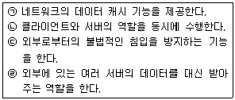
- 프록시 서버
- 웹 서버
- 시맨틱 웹
- 병렬처리 서버
(정답률: 70%)
2과목: 인터넷 자원 탐색
34. 다음 중 웹 브라우저에 대한 설명으로 옳은 것은?
- 웹 서버용 프로그램이다.
- 윈도우 운영체제에서만 활용할 수 있다.
- 웹 서버 접속 시 대부분 IP 주소를 활용한다.
- HTTP, FTP, POP3 등 다양한 프로토콜을 지원한다.
(정답률: 54%)
35. 다음 설명에 해당하는 웹 브라우저의 서비스는?
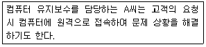
- FTP
- Telnet
- Gopher
(정답률: 73%)
36. 다음 중 웹 브라우저에서 기본적으로 지원하는 기능에 해당하는 것만을 모두 고른 것은?
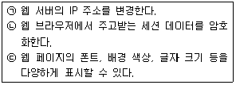
- ㉠
- ㉠, ㉢
- ㉡, ㉢
- ㉠, ㉡, ㉢
(정답률: 50%)
37. 다음에서 설명에 해당하는 웹 브라우저 관련 용어는?
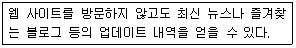
- RSS
- Cookie
- Portal Site
- Proxy Server
(정답률: 59%)
38. 다음 중 텍스트 기반의 웹 브라우저를 모두 고른 것은?
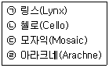
- ㉠, ㉡
- ㉠, ㉣
- ㉡, ㉢
- ㉢, ㉣
(정답률: 53%)
39. 다음 중 오페라(Opera) 브라우저에 대한 설명을 모두 고른 것은?
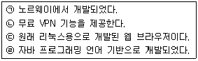
- ㉠, ㉡
- ㉠, ㉣
- ㉡, ㉢
- ㉢, ㉣
(정답률: 42%)
40. 다음 그림과 관련 있는 인터넷 익스플로러의 기능은?
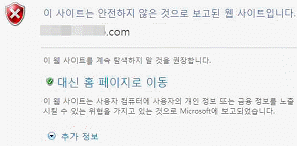
- 실버라이트
- 프레임 인쇄
- 탭 브라우징
- 스마트 스크린 필터
(정답률: 67%)
41. 다음 사례에서 활용할 수 있는 익스플로러의 기능으로 가장 적절한 것은?
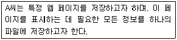
- 텍스트 파일
- 모든 웹 페이지
- 웹 페이지 보관 파일
- 웹 페이지 중 HTML만
(정답률: 68%)
42. 다음 중 InPrivate 브라우징 기능을 활용 시 브라우저를 닫았을 때 삭제되지 않는 정보는?
- 쿠키
- 웹 페이지 기록
- 검색 자동 완성
- 즐겨찾기 또는 피드
(정답률: 69%)
43. 크롬의 옴니박스에 키워드 입력 시 나타나는 모양 중 다음 설명에 해당하는 아이콘은?
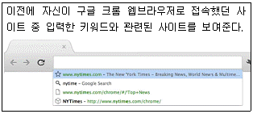
- 별표 아이콘
- 돋보기 아이콘
- 문서 아이콘
- 박스 아이콘
(정답률: 35%)
44. 크롬 브라우저의 '설정' 기능 중 '고급 설정'에 해당하는 항목은?
- 북마크바 항상 표시
- '다운로드 위치' 설정
- Google 계정 연결 해제
- 'Chrome을 기본 브라우저로' 설정
(정답률: 49%)
45. 파이어폭스의 부가 기능 중 다음과 같은 사례에서 활용할 수 있는 기능은?
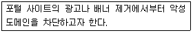
- iMacros
- Ghostery
- Adblock Plus
- Turn Off the Lights
(정답률: 81%)
46. 다음 중 검색엔진에 대한 설명으로 옳은 것을 모두 고른 것은?
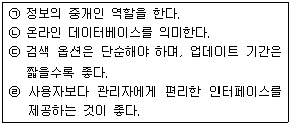
- ㉠, ㉡
- ㉠, ㉣
- ㉡, ㉢
- ㉢, ㉣
(정답률: 46%)
47. 다음 사례에 대한 이유로 적절한 것을 모두 고른 것은?
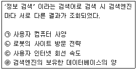
- ㉠, ㉡
- ㉠, ㉣
- ㉡, ㉣
- ㉢, ㉣
(정답률: 77%)
48. 다음 그림은 검색엔진의 3대 구성요소에 관한 것이다. (가)에 알맞은 것은?
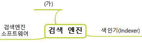
- 크롤러
- 방화벽
- 웹 캐시
- 클라이언트
(정답률: 68%)
49. 다음 중 검색엔진의 로봇이 담당하는 역할로 옳지 않은 것은?
- 자료의 수집
- 정보의 백업
- 색인화 하기
- 인기 사이트 방문
(정답률: 57%)
50. 다음 중 로봇이 웹에 끼칠 수 있는 악영향을 모두 고른 것은?(문제 오류로 전항 정답 처리 되었습니다. 여기서는 1번을 누르면 정답 처리 됩니다.)
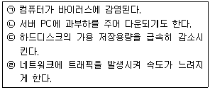
- ㉠, ㉡
- ㉠, ㉣
- ㉡, ㉢
- ㉢, ㉣
(정답률: 77%)
51. 다음 설명에 해당하는 파일은?
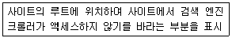
- robots.txt
- index.html
- crawler.txt
- robots.html
(정답률: 44%)
52. 다음 설명에 해당하는 검색엔진의 구축 방식은?
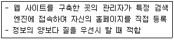
- 로봇 인덱스 방식
- 랜덤 인덱스 방식
- 매뉴얼 인덱스 방식
- 에이전트 인덱스 방식
(정답률: 61%)
53. 다음과 같은 특징을 갖는 검색엔진의 종류는?
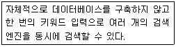
- 단어별 검색엔진
- 주제별 검색엔진
- 지능형 검색엔진
- 하이브리드 검색엔진
(정답률: 54%)
54. 검색엔진 스팸을 방지하고자 할 때 적합한 방법은?
- 클로킹 수법을 활용한다.
- 과도한 상호 링크를 하지 않는다.
- 숨겨진 텍스트나 링크를 활용한다.
- 도입 페이지(doorway page)를 활용한다.
(정답률: 70%)
55. 다음과 같은 검색 결과에 대한 평가로 옳은 것은?
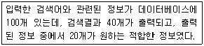
- 재현율은 10%이다.
- 잡음률이 90%이다.
- 정확률은 50%이다.
- 재현율은 낮을수록 좋다.
(정답률: 73%)
56. 다음 설명에 해당하는 네이버의 서비스는?
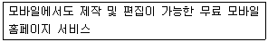
- 네이버 TV
- 네이버 페이
- Mobile Web
- modoo![모두]
(정답률: 53%)
57. 다음 설명에 해당하는 Daum의 서비스는?
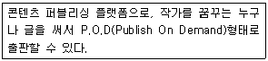
- 뮤직
- 같이가치
- 스토리펀딩
- 브런치
(정답률: 40%)
58. 다음 설명에 해당하는 검색 형식을 모두 고른 것은?
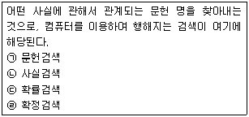
- ㉠, ㉡
- ㉡, ㉣
- ㉠, ㉢
- ㉢, ㉣
(정답률: 34%)
59. 정보검색의 단계별 발전모델 중 '하이브리드' 단계의 특징으로 가장 적절한 것은?
- 정보의 중복성 해소
- 대화기반 지능적 처리
- 정확도보다 재현 중심
- 사용자의 의도와 정보요구 분석
(정답률: 44%)
60. 다음중효과적인정보검색방법으로옳지않은것은?
- 주제별 또는 단어별 검색엔진들의 특징을 적절히 활용한다.
- 검색이 원활하지 않을 때에는 단순한 키워드로 검색한다.
- 각 검색엔진별 도움말, FAQ, Q&A등을 참고 한다.
- 검색엔진에서 지원하는 옵션 검색 또는 필드 검색 조건을 파악한다.
(정답률: 70%)
61. 다음 중 인터넷 검색엔진을 통해 검색할 수 있는 정보가 아닌 것은?
- 지도 정보
- 개인회원의 메일 내용
- 연예인의 이미지 파일
- 달러화의 환율 변동 추세
(정답률: 75%)
62. 다음 설명에 해당하는 정보검색 용어는?
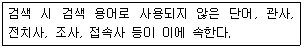
- 개비지
- 불용어
- 리키즈
- 스패밍
(정답률: 80%)
63. 다음 중 검색에서 사용되는 와일드카드 문자로만 짝 지어진 것은?
- *, &
- &, %
- %, ?
- ?, *
(정답률: 52%)
64. 정보의 유형 중 효용성에 대한 분류에 해당하는 것은?
- 3차 정보
- 외부정보
- 항상정보
- 목적적 정보
(정답률: 51%)
65. 인터넷 정보원의 분류 중 '서지정보원'에 해당하는 것을 다음에서 모두 고른 것은?
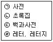
- ㉠, ㉡
- ㉠, ㉢
- ㉡, ㉣
- ㉢, ㉣
(정답률: 40%)
66. 다음 중 개비지를 줄이기 위해 사용하는 검색 옵션은?
- 구문검색
- 절단검색
- 필드검색
- 결과내 재검색
(정답률: 33%)
3과목: 인터넷 윤리
67. 다음 중 인터넷 윤리의 기능으로 거리가 먼 것은?
- 세계윤리
- 책임윤리
- 부분윤리
- 변혁윤리
(정답률: 60%)
68. 다음 중 버니지아 셰어 교수의 네티켓의 핵심 원칙과 거리가 먼 것은?
- 당신의 권력을 남용하지 말라.
- 온라인 상의 자신을 근사하게 만들어라.
- 전문적인 지식을 공유하라.
- 실제 생활과 사이버 공간의 기준과 행동은 다르게 구분하라.
(정답률: 62%)
69. 다음 중 FTP를 사용하는 경우 지켜야할 네티켓과 거리가 먼 것은?
- FTP에 저장된 자료 중 필요한 자료만 다운로드를 진행한다.
- 파일을 업로드 할 때는 공개용 프로그램인지 확인하며, 공개용 프로그램이라고 하더라도 프로그램은 업로드하지 않는다.
- 파일을 송·수신 할 때 주요 업무 시간은 피하고 진행한다.
- 바이러스 검사를 진행 한 후 파일을 업로드하며, 동일한 파일이 있는지 확인 후 진행한다.
(정답률: 66%)
70. 정보화 사회의 발달로 대중이 권력을 감시할 수 있게 됨에 따라 권력자가 대중을 일방적으로 감시하는 것이 아니라, 대중도 권력을 감시하고 이를 통해 통제할 수 있는 것을 뜻하는 말은 무엇인가?
- 판옵티콘
- 시놉티콘
- 모티켓
- 게이트키핑
(정답률: 53%)
71. 다음 중 사이버 범죄의 분류로 구분하였을 때 나머지와 다른 것은?
- 악성 프로그램 유포
- 불법 복제
- 불법 유해사이트 개설
- 사이버 명예 훼손
(정답률: 38%)
72. 다음 중 인터넷 사기가 발생하는 주요 요인이 아닌 것은?
- 정보의 누출이 용이
- 후결제라는 인터넷 거래의 특징
- 상대방이 물건을 실제 가지고 있는지 확인하기 어려움
- 인터넷의 특징인 익명성
(정답률: 76%)
73. 다음 중 안전하고 신뢰성 높은 전자상거래 활성화를 위하여 상업적 웹페이지에 대해 평가한 뒤, 일정 기준을 충족하면 정보통신 산업진흥원에서 인증 마크를 부여하는 제도는 무엇인가?
- 옵트-인 제도
- 더치트 제도
- 에스크로 제도
- eTrust 제도
(정답률: 40%)
74. 다음 중 개인정보 보호 및 유출을 예방하는 방법으로 옳지 않은 것은?
- 회원 가입 시 구체적인 개인정보를 요구하면 가입 여부를 신중하게 판단한다.
- 인터넷 사이트에 무분별한 회원가입은 자제하도록 한다.
- 비밀번호는 주기적으로 변경하고 쉽게 잊지 않도록 전화번호나 생일 등이 포함된 숫자를 사용한다.
- 공용 PC에서는 개인정보 입력 시 자동완성 기능을 사용하지 않도록 한다.
(정답률: 78%)
75. 킴벌리 영이 분류한 인터넷 중독의 유형에 속하지 않는 것은?
- 사이버 교제 중독
- 네트워크 강박증
- 컴퓨터 중독
- 사이버 강의 중독
(정답률: 78%)
76. 다음 중 한국형 인터넷 중독 자가진단 프로그램인 K-척도의 문항의 구성에 해당하지 않은 것은 무엇인가?
- 일상생활장애
- 강박적 사용과 집착
- 내성
- 긍정적 기대
(정답률: 31%)
77. 유저가 게임에 장시간 몰입하는 것을 방지하기 위해 게임 업체에서 이용시간을 제한하려 만든 것으로, 일정량 이상 게임을 즐기면 게임 내에서 얻을 수 있는 이득이 줄어드는 것을 가리키는 말은?
- 피로도 시스템
- 셧다운 제도
- 쿨링오프 제도
- 옵트-아웃 제도
(정답률: 52%)
78. 인터넷 중독의 과정 중, 3단계인 현실탈출에 대한 증상으로 거리가 먼 것은?
- 오직 접속 상태만을 갈구
- 가상세계의 환상에 사로잡혀 현실인식에 장애발생
- 현실에 존재하지 않는 즐거움을 인터넷에서 만끽
- 실제 세계의 모든 질서를 부정
(정답률: 44%)
79. 다음 중 게임 중독을 예방하기 위한 지침으로 옳지 않은 것은 무엇인가?
- 온라인 게임 외에 다양한 대안활동을 모색한다.
- 주변 동료나 가족보다 게임친구와 더 많은 대화를 시도한다.
- 게임은 식사시간 및 수면시간을 철저히 지키며 한다.
- 해야 할 일을 먼저 한 후 게임을 시작한다.
(정답률: 83%)
80. 인터넷 중독 초기 단계의 치료과정에 대한 설명으로 거리가 먼 것은?
- 인터넷 접속시간과 종료시간 기록
- 접속 이유 및 결과의 이익과 불이익 기록
- 주위의 도움과 이용자의 상황을 파악
- 자신의 상황을 게시판에 게시
(정답률: 56%)